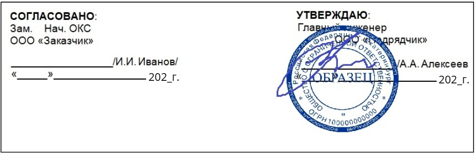
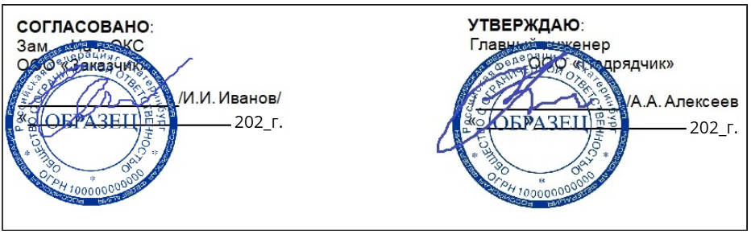
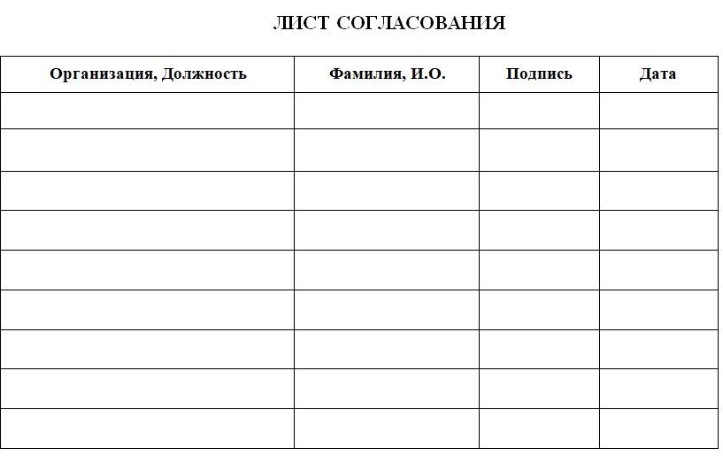
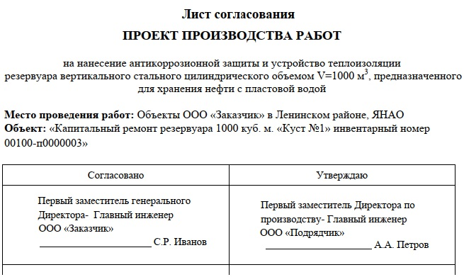

Как согласовать и утвердить ППР

ППР недостаточно составить, его необходимо утвердить и согласовать в установленном порядке. На этом уроке разберем, кто утверждает ППР и как проходит его согласование.
Как проходит процесс согласования ППР
После разработки ППР его утверждает главный инженер генподрядчика или другое ответственное лицо, назначенное приказом. Если работы ведет субподрядчик, ППР утверждает ответственное лицо субподрядной организации и согласовывает генподрядчик.
Первая печать появляется при согласовании внутри компании.

После утверждения внутри организации ППР согласуют с проектной организацией. На этом этапе проверяют, соответствует ли документ проекту и техническим решениям, нет ли отклонений от проектной документации и ошибок в предлагаемых методах.
Затем ППР передают заказчику. Он проверяет соответствие техническому заданию, а также оценивает сроки, бюджет и финансирование. После согласования Заказчиком появляется вторая печать.

После одобрения заказчика ППР направляют в Госнадзор. Если работы проводятся на действующем предприятии, проект нужно согласовать со службой эксплуатации.
У крупных заказчиков и для спецобъектов (например, Росатом, Роскосмос) существуют свои регламенты и профильные организации для согласования. Всегда уточняйте порядок в договоре или внутренних регламентах заказчика. (п. 6.11 СП 48).
Упражнение № 1. Попробуйте самостоятельно определить правильную последовательность утверждения и согласования ППР.
Как оформить лист согласования
Лист согласования – это документ, который фиксирует, что ППР прошел все этапы проверки и выполнение работ будет контролироваться специалистами.
Что указывать в листе согласования:
- Список должностных лиц: Перечень лиц, с которыми нужно согласовать документ (обычно его дает заказчик).
- Визы согласования: Должность, подпись, расшифровка (фамилия и инициалы) и дата.
- Замечания: Место для фиксации правок, если они возникли при проверке.
Строгих требований к формату нет. Чаще всего лист оформляют в виде таблицы.
Рекомендуется делать лист «открытым» и оставлять запасные строки, чтобы при необходимости можно было вписать дополнительных проверяющих.

Если заказчиком регламентирована форма листа согласования, то вам нужно ее придерживаться.

Только после того, как в листе согласования собраны все необходимые подписи, технические руководители ставят свои подписи на титульном листе ППР.
Упражнение № 2. Определите данные, которые указываются в листе согласования ППР.
Замечательная работа! Вам осталось освоить процедуру ознакомления с ППР и внесение в него изменений. На первый взгляд это разные процессы, но к концу урока вы увидите их неразрывную связь в цикле безопасности на объекте.